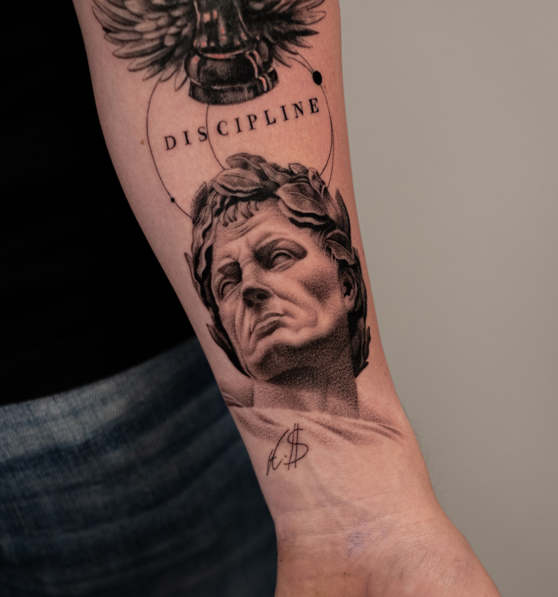
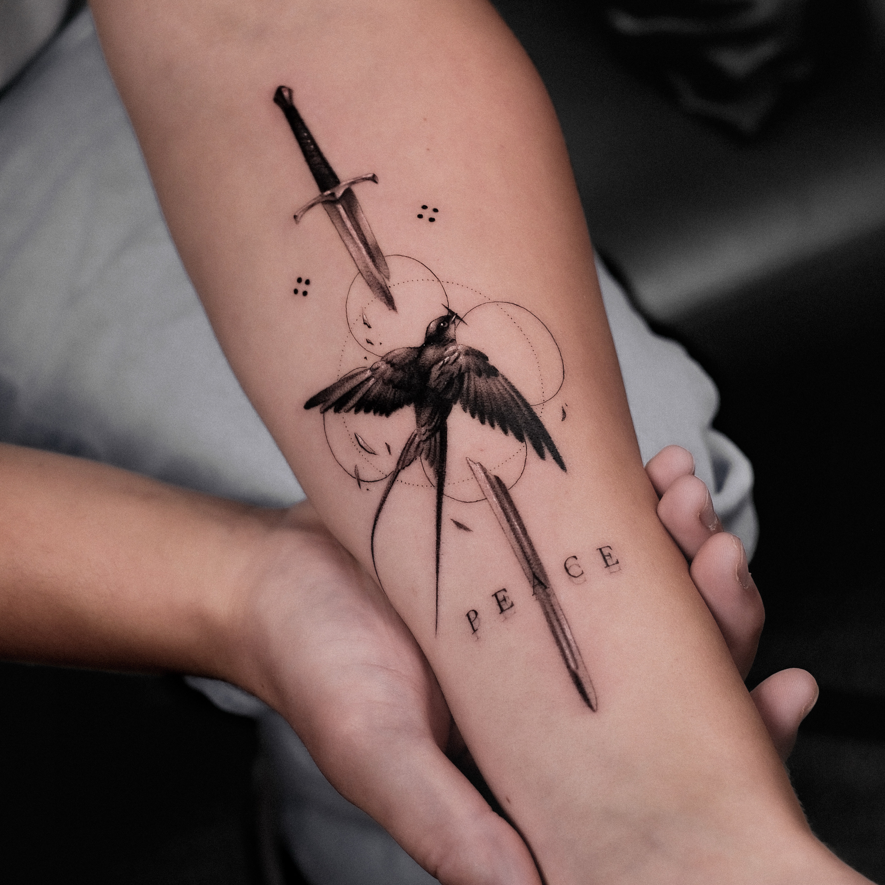
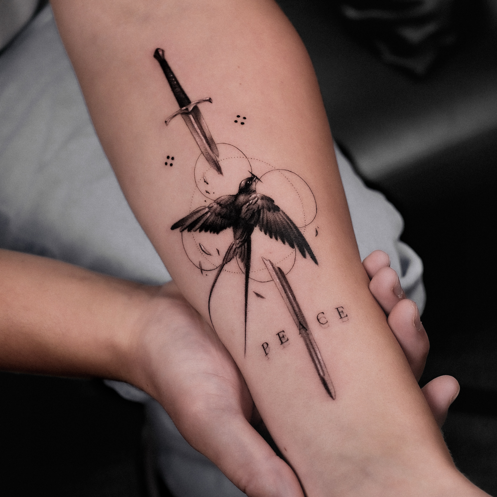

TATOO ARTIST
ROMAN NESTERENKO
ABOUT ME
- Hi, I’m Roman, a tattoo artist with 7 years of experience. I specialize in microrealism — I value precision, depth of detail, and powerful emotional impact, even in the smallest pieces. For me, every tattoo is more than just ink on skin; it’s a personal story, captured in lines and shadows.
- Three years ago, I moved from Ukraine to Germany, escaping the war. Here, far from home, tattooing became more than just my profession — it became my way of communicating with the world, quietly, sincerely, and in my own language. That journey made my art deeper, more honest — and maybe a little melancholic, but all the more real.
- Before becoming a tattoo artist, I studied architecture — something that often surprises my clients. But in truth, architecture taught me composition, working with form, and a deep respect for detail — all of which I now bring into my tattoo work. I also come from a creative family: my father is a sculptor, so I guess you could say that art runs in my blood.
- If you’re looking for a tattoo with soul, precision, and a meaningful story — you’re in the right place. I’d be happy to create something truly special for you.
MY WORKS

 

×

- Below, you will see detailed information and instructions on how to correctly and competently sign up for a session with me.
- Please write in English or Russian - any other language will need to be translated and may cause communication difficulties
INFO
Is it safe to get a tattoo?
Yes, it is completely safe for most people. Tattoos are safe if the tattoo artist strictly follows
safety precautions
and sanitary rules. Compliance with sanitary regulations and client safety is a priority for the
tattoo artist. The
artist ensures the highest possible level of sterilization of tattoo tools, uses disposable sterile
needles, and works
only with certified pigments.
Are there any special requirements for a tattoo?
You must be at least 18 years old to get a tattoo in accordance with the law and health regulations. To get a tattoo, you must present a birth certificate or a valid photo ID (such as a passport or driver’s license).
Is it painful?
Pain varies by individual and placement, but most clients tolerate it well.
What i need to know from you?
- Your name.
- The city where you'd like to get a tattoo from me.
- Your main tattoo idea.
- Approximate size and placement.
- References of what you like or details you would like to see in your future tattoo.
- Dates or days of the week that would be convenient for you.
- Any health conditions that might conflict with getting a tattoo.
Designs
Before getting tattoo
Aftercare
Contact
Don't be shy, just say hi to me
Berliner Allee 69/7 Etage
Düsseldorf, Germany
Tattoo Studio InkWorld